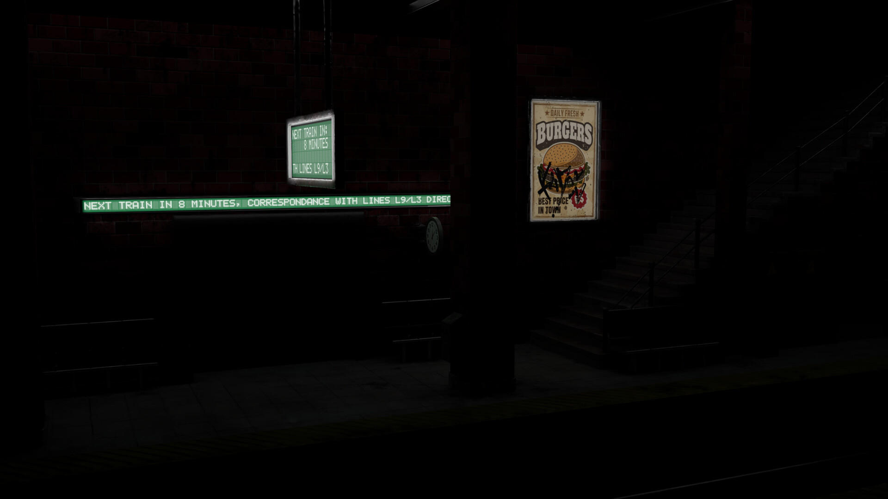
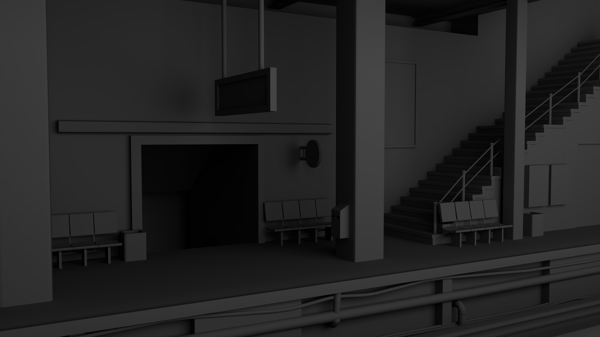
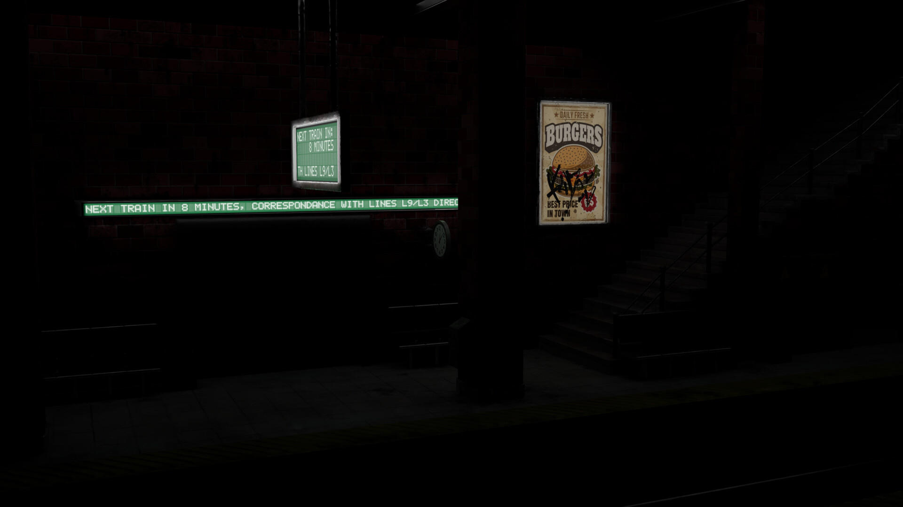
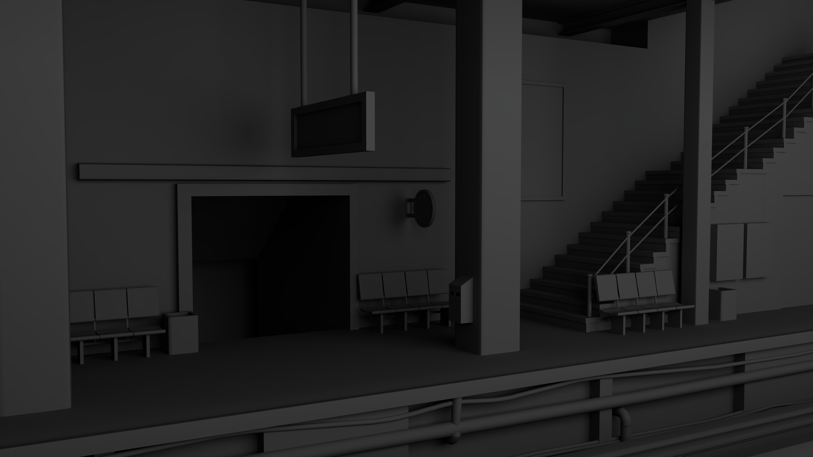

PROYECTOS GENERALES
-New York Satation-
 



Esta estación de metro viene por inspiración a una imagen de referencia de un metro de Nueva York abandonado, con esa imagen recreé el escenario, texturizé e iluminé
-KRiTOS BAR-


KRiTOS Bar era un proyecto que llevaba desarrollando desde noviembre del 2021 como un pequeño proyecto de una barra de bar, pero que después me replanteé agrandar y expandir hasta dónde es hoy en día, un lugar donde hay un bar, un anfiteatro con escenario para pequeños conciertos, una piscina equipada con hamacas y mesas por el verano, un campo de baloncesto vallat, tablas de ping-pong y un gimnasio exterior. Es el proyecto que más tiempo le dediqué, puesto que fue un reto personal para mí.
-CALLE DE PARÍS-


EDIFICIOS DE LA CALLE


Esta calle ambientada en una calle de París está hecho en base a una referencia que encontré. Está mayoritariamente hecho con low-poly aunque algunos objetos son high-poly. Me puse esto como reto para demostrarme a mí la capacidad que tenía de hacer diferente tipo de modelado, este que es más ordenado y con una armonía, en cambio, del proyecto KRiTOS Bar que fue más libre.
-HABITACIÓN FICTICIA DE FONDO-
Esto es un fondo de habitación para un amigo mio que es "Streamer" y me pidió que le modelase esta habitación totalmente personalizada.